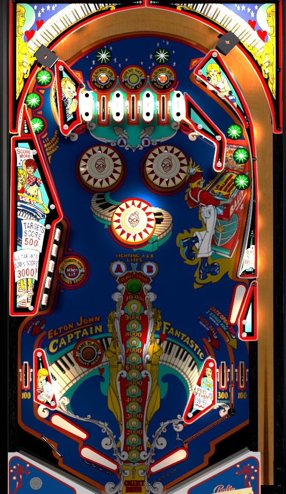

Basically nothing in this game gives decent points aside from bonus. Shoot up to the top of the playfield repeatedly until bonus is maxed at 15,000, double bonus is lit from A+B lanes, and the right gate is open from the lit center top lane. If you've managed all this and the ball is still in play, shoot drop targets from the lower right flipper.
Many things on this table alternate when they are or are not lit. Any 10-point switch will cause these alternating lights to toggle their state. Items that give 10 points include the star rollovers above the top lanes, the slingshots, and the unlit bumpers.
Either the two outer lanes will be lit for 300 points + 3 bonus advance, or the center lane will be light for Opens Gate. Regardless of whether they are lit or not, the left top lane awards the letter A, and the right top lane awards the B. Collecting both A and B doubles the ball's bonus. Base bonus maxes out at 15,000 points. Unlike other machines of this era, double bonus is not given for free on any particular ball, and must be earned on each ball from collecting A+B.
Both return the ball to the top of the playfield. The left lane is best shot from the lower right flipper, and the right lane is best shot from the lower left flipper. Each of the star rollovers on both of these lanes award 1 bonus advance when lit; whether they are lit or not alternates with 10-point switch hits.
Each target is worth 500 points when knocked down. Try not to hit more than one at the same time or the slow EM scoring reels may not count the points for both.
Clearing the bank scores 3,000 points and resets it.
The first completion lights extra ball (sometimes; alternates with 10-point switches) on the right in lane.
The second completion lights special on the left out lane.
Each completion starting with the 3rd is worth a special directly.
Special has no value in tournament play. Extra ball likely doesn't either, but some venues may allow it to be played instead of disabling it.
The drop targets are best shot from the lower right flipper. They can be shot from the upper right, but it's very easy to flip into the left outlane. They can also be swept from the upper left flipper, but this is a little risky and leads to some lost points if you hit more than one target.
There is no left in lane. When the drop targets are completed for a second time, the special is lit at the left out lane. It is very easy to scissor drain between the two left flippers.
The right in lane is worth 300 points and 3 bonus advances, and is also lit for extra ball after 1 drop target completion. It is nearly impossible to shatz/alley pass to the left in lane. The right out lane has a gate that, when opened by a lit top center lane, turns the right out lane into a second right in lane. By default, an open gate lasts for the entire ball, but I believe it is possible to set the gate to close after being used once.
Both out lanes always score 100 points.
This game plays a loud buzzer noise when a player rolls the score at 100,000 points. Try to keep tabs on your score if you're getting close so that the noise doesn't frighten or distract you.